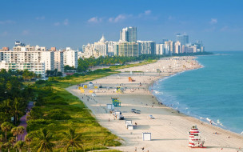

El Parque Nacional del Este, tambien conocido como Parque Nacional Cotubanama, es una del as reservas naturales más importantes del a Republica Dominicana. Este parque ofrece una rica biodiversidad y paisajes impresionantes
Imágenes del Parque
A continuacion, se muestra una imagen del Parque Nacional del Este:

Actividades
En el parque, puedes realizar diversas actividades como:
Senderismo
Buceo
Observación de aves
Paseos en bote
Enlaces de Interés
Para mas información, puedes visitar los siguientes enlaces: